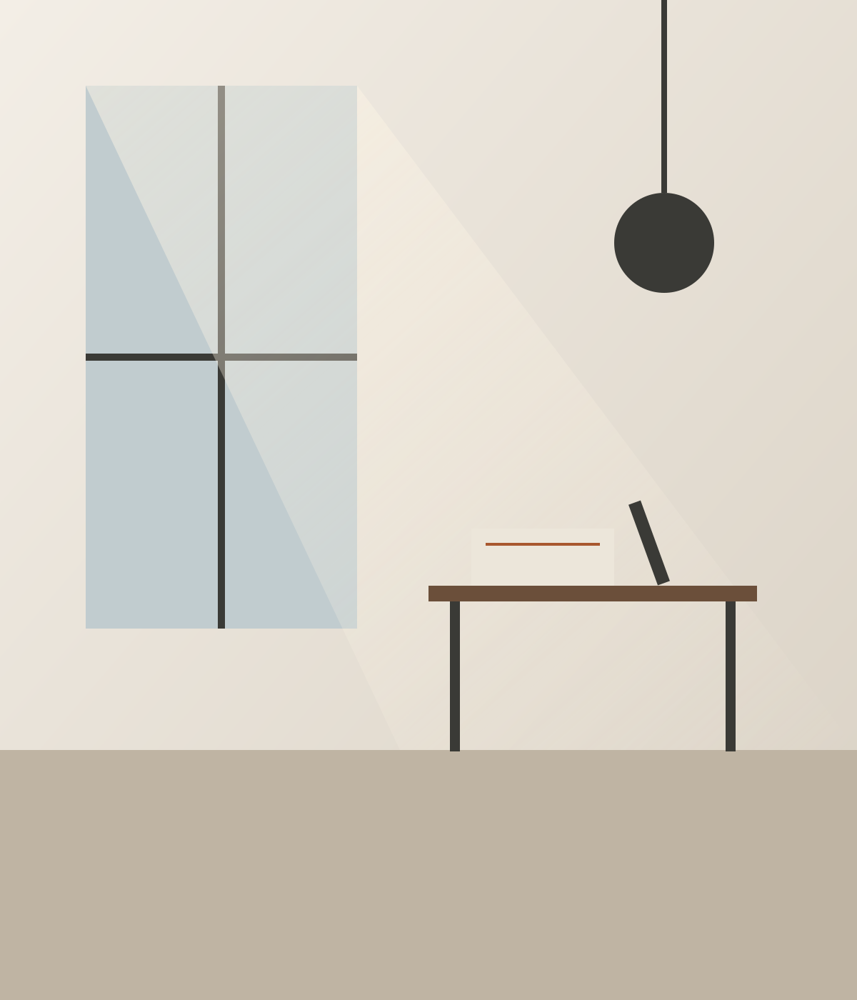

Das Büro
Klein genug für Nähe, erfahren genug für jedes Projekt.
Seit 2008 planen wir Wohnungen und Häuser für private Bauherren. Bei uns haben Sie es von Anfang bis Ende mit denselben Menschen zu tun.

Wer wir sind
Ein Atelier, kein Planungsapparat.
Gegründet hat Anna Weiss das Büro mit einer einfachen Überzeugung: Gute Architektur entsteht, wenn man den Menschen zuhört, die später darin wohnen. Heute sind wir ein Team aus fünf Architektinnen und Architekten in einem hellen Atelier in München.
Wir bauen bewusst nicht alles. Unser Fokus liegt auf Wohnungen und Einfamilienhäusern, auf Umbau, Sanierung und behutsamen Neubauten. So kennen wir die Fragen privater Bauherren genau und auch die Antworten.
- Jahre Erfahrung
- 18
- realisierte Projekte
- 140+
- Architekt/innen im Team
- 5
- Weiterempfehlungsquote
- 9/10
Unsere Haltung
Woran Sie uns erkennen.
Zuhören vor Zeichnen
Bevor wir einen Strich ziehen, wollen wir verstehen, wie Sie leben: morgens, abends, mit Kindern, mit Gästen, in zehn Jahren.
Ehrliche Materialien
Holz, Lehm, Kalk und Naturstein, langlebig und gesund. Wir planen Räume, die mit den Jahren schöner werden statt älter.
Kosten im Blick
Ein klares Budget ist Teil des Entwurfs, kein Nachgedanke. Sie erhalten Kostenschätzungen in jeder Phase, ohne versteckte Posten.
Team
Ihre Ansprechpartner.
Mitglied der Bayerischen Architektenkammer. Wir bilden uns regelmäßig weiter, besonders in Energieeffizienz und Bauen im Bestand.
Anna Weiss
Architektin, Gründerin
Studium an der TU München, zuvor acht Jahre in Zürich. Begleitet jedes Projekt persönlich vom ersten Gespräch an.
Jonas Berger
Architekt, Projektleitung
Spezialist für Altbau und Sanierung. Kennt jede Bauordnung und die meisten Handwerksbetriebe der Stadt.
Lea Hoffmann
Innenarchitektin
Verantwortlich für Küchen, Bäder, Einbauten und Lichtplanung, also für alles, was man täglich berührt.
Erzählen Sie uns von Ihrem Vorhaben.
Das erste Gespräch ist kostenlos und unverbindlich, bei uns im Büro oder direkt bei Ihnen vor Ort.
Oder rufen Sie an: 089 123 456 70